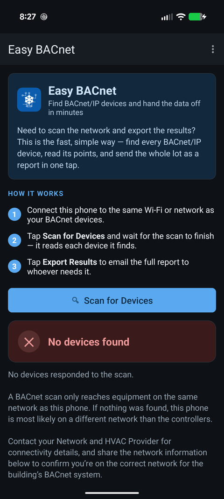

A device won't show up in a scan — can I add it by IP address?
Updated 30 September 2026
Yes — if a device won't answer a broadcast scan but you know its IP address, you can reach it with a directed message instead of a broadcast. Discovery normally works by broadcasting Who-Is, and broadcasts don't cross routers without a BBMD. A directed read sent straight to the device's IP sidesteps that, so a controller on another subnet — or one behind a switch that swallows broadcast — can still be read once you know where it lives.

When you'd add a device by IP
Broadcast discovery is the easy path, but it has limits. Add a device directly when:
- The device is on a different subnet and there's no BBMD forwarding broadcasts.
- The network blocks or drops broadcast traffic (some managed switches and Wi-Fi setups do), even though unicast to the device works fine.
- You only need one known controller and don't want to scan a large or sensitive network.
- A scan finds everything except one device whose IP you already have.
What you need first
- The device's IP address. From the integrator, a label on the panel, the DHCP/router table, or a prior scan. This is the one thing a directed read can't guess.
- A route to it. Your phone must be able to reach that IP — same network, or a network that routes to it. Directed BACnet still travels over UDP 47808, so that port must be open along the path.
- Its port, if non-standard. Most devices use 47808; some sites use 47809 or higher.
How to do it in Easy BACnet
- Open Easy BACnet Mode and tap the menu (three dots, top right) → Add device by IP… (in Browser Mode it is a button under Scan the network). Wait for any running scan to finish first.
- In Add a device by IP address, type the IP address or host name (e.g. 192.168.1.50) and the UDP port — leave 47808 unless the site uses another.
- Tap Add. The app sends a directed Who-Is and a direct read to that address (Contacting…). A router at that address can answer for several MS/TP devices behind it, so you may see Added 3 device(s).
- The device joins your results like any scanned device: open its points, write, export it, or build a custom remote or control panel for it.
If nothing answers you get No BACnet IP device answered at … — check the address and port, and that the phone can reach that network at all (the steps below).
Seeing a whole remote subnet: use a BBMD
If the site has a BBMD, menu → BBMD for remote networks… lets you enter its BBMD IP address (and port) and tap Save. Every scan then registers the phone as a foreign device with the BBMD and broadcasts through it, so devices on the subnets it serves are discovered too. Clear goes back to scanning the local network only. If the BBMD refuses the registration or does not answer, the scan result says so.
A directed add is not a BBMD. Reaching one device by IP does not make the rest of a remote subnet discoverable. If you need to see a whole remote network, that's a BBMD conversation with whoever runs the controls network.
If a directed read still fails
- Confirm the device is reachable at all — ping the IP first. No ping reply usually means a network/route problem, not a BACnet one.
- Check the port. A device on 47809 won't answer on 47808.
- Check for a firewall or VLAN blocking UDP 47808 between you and the device — an IT/network question.
- Confirm the IP is current. A DHCP lease can move; the address you were given may now belong to something else.
For the broader “nothing shows up” case, start with why can't I find my BACnet IP devices.